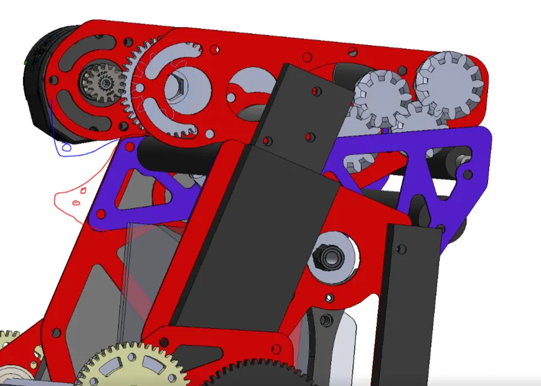
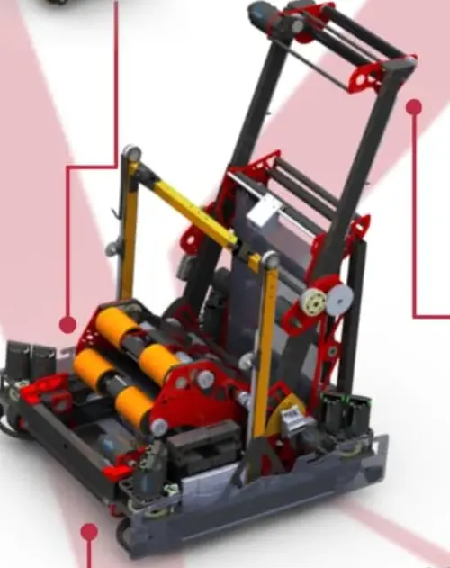
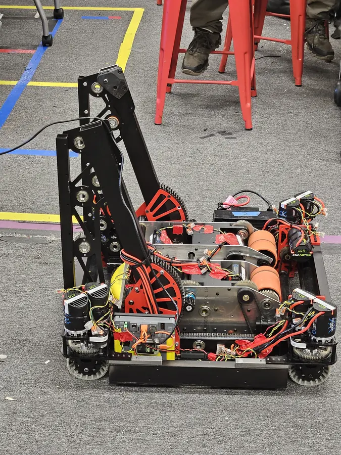
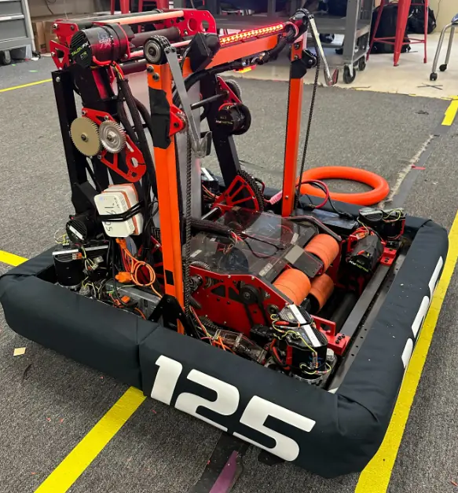

The game
In Crescendo (2024), the game pieces are notes, 14 in foam rings. Robots score them in the high Speaker and the low Amp. Amp notes let the human player "amplify" the Speaker, briefly making Speaker notes worth more. In the endgame, robots climb the Stage, and a note scored in the Trap, a small goal set into the Stage, earns extra points.
The mechanism
Foam rings are floppy and awkward to place precisely. My module drives notes along a snaking roller path that keeps control of the ring all the way through. The module rides on an extending stage, so it can deposit at multiple heights: low for the Amp, and high enough to reach the Trap during the climb. One mechanism covering both goals meant the robot needed no separate Trap scorer.
The team called it "the Tramper" (Trap + Amp) and credited its Trap reliability for the robot's #1 seed in the Ganson division at the New England District Championship.


Results
During the regular season the robot set multiple scoring records, including a 144-point alliance score in the Greater Boston finals that matched the highest alliance score anywhere in the world at that point in the season. It won two New England district events (Bridgewater State University and Greater Boston), seeded #1 in its division at the New England District Championship and finished as a finalist there, and ended ranked 2nd of 215 teams in New England.

